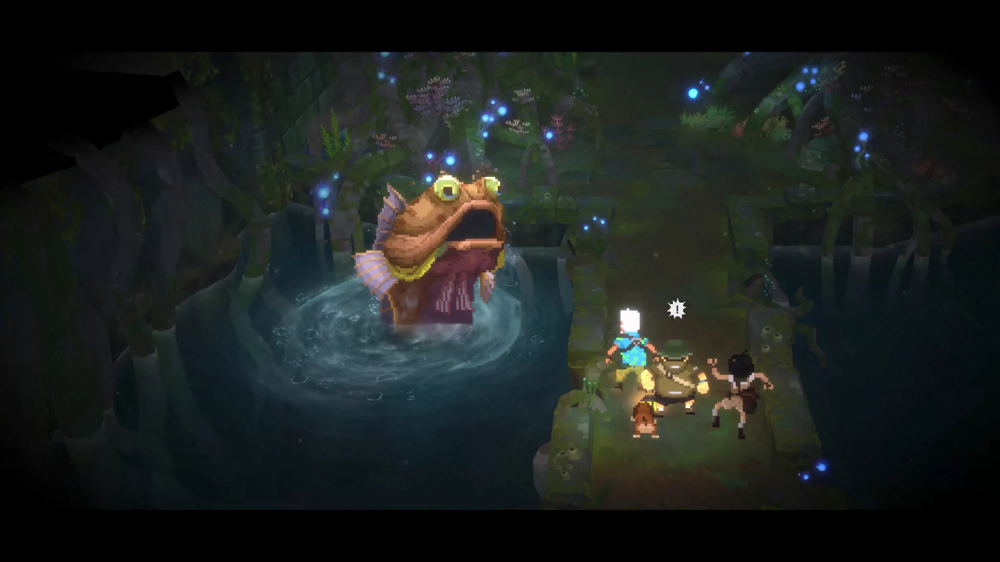

수정 기록은 쌓이지만 지나간 이슈 목록으로만 남을 수 있습니다.
라이브 서비스에 축적된 과거 수정 기록을 현재 테스트에서 다시 활용할 방법을 확인했습니다.
01 · QA RESEARCH PORTFOLIO
패치 이력에서 테스트 근거까지
라이브 서비스에 누적된 과거 결함 기록을현재 테스트 설계의 근거로 다시 활용할 수 있는지 확인했습니다.
AI는 기록 구조화·비교와 테스트 관점 확장을 보조하고, 실제 플레이·Evidence 확보·최종 판정은 직접 수행했습니다.
PATCH HISTORY · TEST DESIGN · EVIDENCE REVIEW
GAME QA PORTFOLIO · 정재우
02 · NAVIGATION
분석 흐름 한눈에 보기
이 문서는 과거 결함 기록을 현재 테스트 설계와 실제 검증으로 어떻게 연결했는지를 순서대로 보여줍니다.
03 · RESEARCH BACKGROUND
반복 실패 구조를 현재 테스트 질문으로 바꾸고, 직접 플레이로 검증했습니다.
라이브 서비스에 축적된 과거 수정 기록을 현재 테스트에서 다시 활용할 방법을 확인했습니다.
현재 환경에서 판정 가능한 항목은 실제 플레이 결과와 Evidence를 기준으로 검증했습니다.
04 · RESEARCH FLOW
패치 기록을 테스트로 바꾸는 과정
과거 기록을 현재 테스트 질문으로 전환하고, 마지막 판정은 실제 플레이 근거로 확인했습니다.
05 · AI ASSISTED WORKFLOW
AI와 QA 담당자의 역할을 분리한 검증 흐름
AI는 많은 기록의 구조화·비교와 테스트 관점 확장을 보조했습니다. 공식 자료 재확인, 실행 가능성 판단, 실제 플레이, Evidence 확보와 최종 판정은 직접 수행했습니다.
작업 환경ChatGPT Plus 개인 구독개인 학습·포트폴리오 환경
판정 원칙AI 자동 게임 실행 없음AI 자동 최종 판정 없음공식 자료와 실제 플레이에서 확인한 결과를 판정 근거로 사용
AI 활용
직접 확인
원문과 플레이 결과를 다시 확인한 뒤, 검증된 내용만 기준본에 반영했습니다.
06 · AI VALIDATION RULES
AI 활용 시 검증 기준
공식 원문을 다시 확인하고 근거와 맞지 않는 해석을 제거합니다.
화면과 수치 등 판정 근거를 확보하기 전에는 결론을 보류합니다.
접근 가능성·관찰 가능성·재실행 가능성으로 실제 검증 대상을 필터링합니다.
최종 판정은 공식 자료와 직접 플레이에서 확인한 결과를 기준으로 합니다.

07 · ANALYSIS BOUNDARY
어디까지 분석했는가
2025.08.19 2026.08.19
이 날짜는 프로젝트 수행 기간이 아니라 분석 대상으로 삼은 패치 이력의 기간입니다. 해당 기간의 공식 자료에서 직접 확보한 본문을 근거로 결함 기록을 구조화했습니다.
08 · SOURCE SCOPE
공식 자료를 얼마나 확보했는가
분석 기간에 공식 자료 45개를 확인했습니다. 이 가운데 실제 패치 본문까지 확보해 결함 기록 정리에 활용할 수 있었던 자료는 11개였습니다.
공식 자료 수를 기준으로 한 직접 본문 확보 비율은 24.4%입니다. 모든 자료의 본문을 동일하게 확보한 것은 아니므로, 이번 분석은 직접 확인할 수 있었던 범위 안에서 진행했습니다.
본문 확보 비율 24.4% · 11 / 45
09 · DATA LIMITS
이 데이터로 어디까지 말할 수 있는가
확보한 자료의 범위와 한계를 함께 기록해, 이번 분석 결과를 어디까지 적용할 수 있는지 구분했습니다.
10 · STRUCTURED CORPUS
200건의 구조화 기록은 무엇을 뜻하는가
직접 확보한 공식 패치 본문에서 결함이나 수정 내용을 하나씩 분리해 200건의 과거 결함 기록으로 구조화했습니다.
각 기록에는 어떤 시스템에서, 어떤 조건에서, 무엇이 잘못됐고, 어떤 수정이 이루어졌는지를 정리했습니다. 이후 기록을 서로 비교해 기능 이름이 달라도 반복되는 실패 구조가 있는지 확인했습니다.
결함 기록을 비교할 때 확인한 주요 항목
어떤 기능에서
어떤 상황에서
무엇이 잘못되고
어떤 수정이 이루어졌는지
11 · PATTERN METHOD
결함 기록에서 반복 구조를 찾는 방법
개별 과거 버그를 그대로 재현하는 것이 아니라, 여러 수정 사례에서 반복되는 실패 구조를 현재 테스트 관점으로 다시 사용할 수 있도록 PAT로 묶었습니다.
과거 결함 기록을 같은 기준으로 정리
기능 이름이 같은지를 기준으로 묶기보다, 어떤 조건에서 어떤 상태가 잘못되는지를 비교했습니다.
12 · DEFECT VIEWPOINTS
반복해서 나타난 결함 패턴 6개
6개 PAT는 현재 발생 중인 오류 목록이 아니라, 과거 수정 사례에서 반복된 실패 구조를 현재 시스템의 테스트 관점으로 다시 사용하기 위한 기준입니다. TS-CAT은 그 관점을 현재 게임 시스템에 적용해 만든 개별 테스트 후보입니다.
효과 적용과 차단
전환 전후 상태
진행 갱신과 접근
13 · PATTERN FOCUS
과거 결함 패턴 → 현재 테스트 질문
효과 적용과 차단 규칙
PAT-002A 관련 과거 수정 사례 5건 · 여기서 설계한 테스트 후보 3개
유효한 대상과 상황이 갖춰졌는데도 회복, 강화, 반격 같은 효과가 적용되지 않는 실패 구조입니다.
PAT-002B 관련 과거 수정 사례 5건 · 여기서 설계한 테스트 후보 4개
면역, 방어, 가드처럼 효과를 차단해야 하는 규칙이 적용되지 않아 잘못된 상태가 발생하는 구조입니다.
14 · PATTERN FOCUS
과거 결함 패턴 → 현재 테스트 질문
전환 전후 상태 유지
PAT-004 관련 과거 수정 사례 9건 · 여기서 설계한 테스트 후보 8개
메뉴·지역·미니게임처럼 플레이 맥락이 바뀌었는데도 이전 상태에서만 필요했던 UI나 피드백이 남는 유형입니다.
PAT-005 관련 과거 수정 사례 8건 · 여기서 설계한 테스트 후보 5개
탭이나 지역을 이동한 뒤에도 유지되어야 할 선택, 설정, 진행 상태가 소실되거나 이전 값으로 돌아가는 유형입니다.
15 · PATTERN FOCUS
과거 결함 패턴 → 현재 테스트 질문
진행 갱신과 접근 조건
이벤트 하나가 끝났을 때 후속 상태가 함께 갱신되는지, 아직 자격이 없는 기능이 미리 노출되지 않는지를 확인하는 관점입니다.
완료·획득 이벤트 이후 미션, 등록, 레시피, 업적처럼 종속된 진행 상태가 갱신되지 않는 실패를 다룹니다.
사용 조건을 충족하지 않았거나 현재 맥락과 맞지 않는 메뉴·기능이 노출되고 접근되는 실패를 다룹니다.
16 · TEST DESIGN
결함 패턴을 테스트 질문으로 바꾸기
과거에 발생했던 결함을 현재 버그로 가정하지 않았습니다. 과거 실패 구조를 현재 시스템에서 독립적으로 확인할 수 있는 테스트 질문으로 전환했습니다.
PAT과거 패치 이력에서 확인한 반복 결함 구조
→TS-CAT그 구조를 현재 게임 시스템에 적용해 만든 개별 테스트 시나리오 후보
PAT-004 · 관련 과거 수정 사례 9건
과거 패치 기록에서 메뉴·지역·미니게임 전환 뒤 이전 상태의 UI나 피드백이 남는 수정 사례를 확인했습니다.
현재 버전에서 같은 실패 구조를 독립적으로 확인할 수 있는 기능을 찾았습니다.
New여섯 패턴의 관련 과거 수정 사례와 여기서 설계한 테스트 후보
| 패턴 | 관련 과거 수정 사례 | 여기서 설계한 테스트 후보 |
|---|---|---|
| PAT-002A | 5건 | 3개 |
| PAT-002B | 5건 | 4개 |
| PAT-004 | 9건 | 8개 |
| PAT-005 | 8건 | 5개 |
| PAT-006 | 8건 | 14개 |
| PAT-007 | 11건 | 12개 |
| 합계 | 관련 과거 수정 사례 46건 | 여기서 설계한 원자적 시나리오 후보 46개 |
두 합계가 모두 46이지만, 과거 수정 사례와 현재 테스트 후보는 서로 다른 데이터 집합입니다.
17 · ATOMIC CATALOGUE
46개의 독립 테스트 시나리오
6개 PAT를 현재 게임 시스템별 테스트 질문으로 확장한 결과 46개의 원자적 테스트 시나리오 후보를 설계했습니다. 46개는 실제 실행 건수가 아니라 테스트 설계 후보의 범위입니다.
TS-CAT-021은 개별 테스트 시나리오가 아닌 설계 범주로 재분류해 원자적 시나리오 집계에서 제외했습니다. 따라서 ID 범위는 001~047이지만 원자적 시나리오는 46개입니다.
| TS ID | 대상 시스템·기능 | 시나리오·검증 목적 | 패턴 | 현재 상태 |
|---|---|---|---|---|
| TS-CAT-001 | Toad Bracelet 독 효과 | 유효 대상에 효과가 발동하면 독 상태가 적용되는지 확인 | PAT-002A | 판정 기준 확인 필요 |
| TS-CAT-002 | Beetle Battle 특수 젤리 | 유효 곤충에게 젤리를 사용하면 명시된 효과가 적용되는지 확인 | PAT-002A | 실제 플레이 확인 완료 — 수치 기준 일부 미확정 상태의 정상 확인 |
| TS-CAT-003 | Beetle Battle Paper 방어 | Paper 방어 성공 시 상대에게 반격 피해가 적용되는지 확인 | PAT-002A | 실제 플레이 확인 완료 — 일반 정상 확인 |
| TS ID | 대상 시스템·기능 | 시나리오·검증 목적 | 패턴 | 현재 상태 |
|---|---|---|---|---|
| TS-CAT-004 | 보스 Ink Bomb 면역 | 면역 대상 보스가 Ink Bomb 효과를 차단하는지 확인 | PAT-002B | 판정 기준 확인 필요 |
| TS-CAT-005 | 보스 Shock·Freeze 면역 | 면역 대상 보스가 충격·빙결 효과를 차단하는지 확인 | PAT-002B | 판정 기준 확인 필요 |
| TS-CAT-006 | Giant Mud Crab Guard | Guard 활성 상태에서 해당 스킬 피해가 차단되는지 확인 | PAT-002B | 판정 기준 확인 필요 |
| TS-CAT-007 | Sulong 경직 제외 | 적용 제외 상태의 Sulong에게 근접 경직이 발생하지 않는지 확인 | PAT-002B | 판정 기준 확인 필요 |
| TS ID | 대상 시스템·기능 | 시나리오·검증 목적 | 패턴 | 현재 상태 |
|---|---|---|---|---|
| TS-CAT-008 | VIP Cooking Battle 재시도 UI | 재시도 시 이전 시도의 진행·표시 상태가 초기화되는지 확인 | PAT-004 | 판정 기준 확인 필요 |
| TS-CAT-009 | Animal Block 결과 UI | 다음 결과 진입 시 이전 결과의 모션·표시 상태가 남지 않는지 확인 | PAT-004 | 판정 기준 확인 필요 |
| TS-CAT-010 | Inventory New 표시 | 정식 해제 조건 충족 후 New 표시가 제거되는지 확인 | PAT-004 | 판정 기준 확인 필요 |
| TS-CAT-011 | 미니맵 아이콘 수명주기 | 유효 조건 종료 후 관련 미니맵 아이콘이 제거되는지 확인 | PAT-004 | 실행 조건 확인 필요 |
| TS-CAT-012 | 수풀 전용 탄약 가이드 | 수풀을 벗어난 뒤 수풀 전용 탄약 가이드가 사라지는지 확인 | PAT-004 | 추가 실행 보류 |
| TS-CAT-013 | Bombs Away 커서 | 미니게임 종료 후 미니게임 전용 커서가 제거되는지 확인 | PAT-004 | 추가 실행 보류 |
| TS-CAT-014 | 도마뱀 먹이주기 이모지 | 먹이주기·장면 전환 뒤 이전 이모지가 남지 않는지 확인 | PAT-004 | 진행 조건 및 일회성 위험 |
| TS-CAT-015 | Region 타이틀 모드 | Region 모드에서 최근 플레이 지역에 맞는 타이틀 화면이 표시되는지 확인 | PAT-004 | 실제 플레이 확인 완료 — 일반 정상 확인 |
| TS ID | 대상 시스템·기능 | 시나리오·검증 목적 | 패턴 | 현재 상태 |
|---|---|---|---|---|
| TS-CAT-016 | Bancho Grill 등록 재료 | 등록된 메뉴·재료 상태가 재접속 또는 재시작 뒤 유지되는지 확인 | PAT-005 | 판정 기준 확인 필요 |
| TS-CAT-017 | 출전 곤충 선택 상태 | 탭 전환 후 선택한 출전 곤충 상태가 유지되는지 확인 | PAT-005 | 판정 기준 확인 필요 |
| TS-CAT-018 | Beetle Battle 배틀 채집통 | 곤충 선택 후 다른 탭을 왕복해도 확정한 선택 상태가 유지되는지 확인 | PAT-005 | 실제 플레이 확인 완료 — 일반 정상 확인 |
| TS-CAT-019 | 세타 숲 도마뱀 미끼 | 정상적으로 유지돼야 하는 미끼가 전투 후 임의로 사라지지 않는지 확인 | PAT-005 | 실행 조건 확인 필요 |
| TS-CAT-020 | 변이 과일 처리 상태 | 작물 식재 후 지역을 이동해도 변이 처리 가능 상태가 유지되는지 확인 | PAT-005 | 판정 기준 확인 필요 |
| TS ID | 대상 시스템·기능 | 시나리오·검증 목적 | 패턴 | 현재 상태 |
|---|---|---|---|---|
| TS-CAT-022 | Ecowatcher Porbeagle 미션 | 조건을 충족한 Porbeagle 이벤트 후 미션 진행 수치가 갱신되는지 확인 | PAT-006 | 실행 조건 확인 필요 |
| TS-CAT-023 | Mysterious Garden 미션 | 유효한 완료 행동 후 미션 완료 상태가 정상 반영되는지 확인 | PAT-006 | 진행 조건 부족 |
| TS-CAT-024 | Operation: Sulong Hunt | 당일 유효 완료 조건 충족 후 미션 완료 상태가 갱신되는지 확인 | PAT-006 | 진행 조건 부족 |
| TS-CAT-025 | Basilosaurus 카드 등록 | 유효한 카드 획득 후 Marinca 수집 목록의 등록 상태가 갱신되는지 확인 | PAT-006 | 진행 조건 부족 |
| TS-CAT-026 | Atlas Beetle 등록 | Atlas Beetle 획득 후 수집함에 등록되는지 확인 | PAT-006 | 진행 조건 부족 |
| TS-CAT-027 | 보스 재료→레시피 해금 | 정확한 조건을 충족한 보스 재료 획득 후 연결된 레시피가 해금되는지 확인 | PAT-006 | 실행 조건 확인 필요 |
| TS-CAT-028 | 정글 업적 전체 완료 보상 | 모든 정글 업적 완료 후 특별 인테리어 보상 상태가 갱신되는지 확인 | PAT-006 | 판정 기준 확인 필요 · 진행 조건 및 일회성 위험 |
| TS-CAT-029 | 업적 풍뎅이의 왕 | 거대 곤충 두 마리를 잡았다 조건 충족 시 업적이 달성되는지 확인 | PAT-006 | 실행 조건 확인 필요 |
| TS-CAT-030 | 업적 라플레시아 | 마린카 블룸에서 꽃을 피웠다 조건 충족 시 업적이 달성되는지 확인 | PAT-006 | 실행 조건 확인 필요 |
| TS-CAT-031 | 주민 최대 호감도 | 모든 주민의 호감도를 최대로 올린 뒤 숨겨진 Spirits를 이용할 수 있는지 확인 | PAT-006 | 진행 조건 부족 |
| TS-CAT-032 | Cobra 신규 스킬 | 모든 엔딩 이벤트 완료 후 Cobra 신규 스킬이 해금되는지 확인 | PAT-006 | 진행 조건 부족 |
| TS-CAT-033 | Sulong 클리어 연동 | Sulong 클리어 후 Bull Shark가 출현 가능 상태로 갱신되는지 확인 | PAT-006 | 진행 조건 부족 |
| TS-CAT-034 | 정글 엔딩 인테리어 보상 | 정글 엔딩 후 Blue Hole 복귀 시 정글 테마 인테리어 세트가 지급되는지 확인 | PAT-006 | 진행 조건 부족 |
| TS-CAT-035 | 정글 엔딩 요리 3종 | 정글 엔딩 완료 후 복귀하는 과정에서 요리 3종이 등록·제공되는지 확인 | PAT-006 | 진행 조건 부족 |
| TS ID | 대상 시스템·기능 | 시나리오·검증 목적 | 패턴 | 현재 상태 |
|---|---|---|---|---|
| TS-CAT-036 | 언어 설정 화면별 규칙 | 타이틀 화면과 게임 플레이 설정에서 언어 변경 가능 여부가 각 화면의 규칙을 따르는지 확인 | PAT-007 | 추가 실행 보류 |
| TS-CAT-037 | DREDGE 메뉴 접근 제한 | DREDGE DLC가 삭제·부재한 경우 Display Aberrant Menu가 노출되지 않는지 확인 | PAT-007 | DLC 또는 접근 조건 부족 |
| TS-CAT-038 | Bancho Grill 등급 정보 | 첫 서비스 이전에는 등급 정보에 접근할 수 없는지 확인 | PAT-007 | 진행 조건 부족 |
| TS-CAT-039 | Fishing 카테고리 | Fishing 해금 전 앱·UI에 Fishing 카테고리가 노출되지 않는지 확인 | PAT-007 | 진행 조건 부족 |
| TS-CAT-040 | 선물 UI 가격순 정렬 | 선물 화면에서 Sort by Price/가격순 항목이 노출되지 않는지 확인 | PAT-007 | 실제 플레이 확인 완료 — 일반 정상 확인 |
| TS-CAT-041 | Midnight Candy 컷신 | 컷신으로 다른 기능 입력이 제한되는 동안 스마트폰 접근이 차단되는지 확인 | PAT-007 | 진행 조건 및 일회성 위험 |
| TS-CAT-042 | 지역별 Auto Run | Auto Run을 사용할 수 없는 화면·플레이 상태에서 관련 기능·버튼이 노출되지 않는지 확인 | PAT-007 | 판정 기준 확인 필요 |
| TS-CAT-043 | 일일 과일 바구니 보상 | 당일 보상을 이미 받은 뒤 두 번째 보상 접근이 비활성 상태로 유지되는지 확인 | PAT-007 | 현재 일일 상태 의존으로 비선정 |
| TS-CAT-044 | In the Jungle 레시피 접근 제한 | DLC 미설치 상태에서 DLC 레시피가 제작 목록에 노출되지 않는지 확인 | PAT-007 | DLC 또는 접근 조건 부족 |
| TS-CAT-045 | 특수 젤리 사용 횟수 | 같은 곤충·같은 전투에서 2회 사용 후 세 번째 사용이 거부되는지 확인 | PAT-007 | 추가 실행 보류 |
| TS-CAT-046 | 비료 제작 재료 사용 가능 여부 | 보스 재료가 비료 제작 재료로 선택·사용되지 않는지 확인 | PAT-007 | 추가 실행 보류 |
| TS-CAT-047 | Adventure Gear 탭 접근 제한 | 세타 숲 전투 해금 전 Adventure Gear 탭에 접근할 수 없는지 확인 | PAT-007 | 진행 조건 부족 |
18 · EXECUTION FILTER
무엇을 먼저 실행할지 판단한 기준
설계한 모든 후보를 실행하는 것이 아니라, 현재 환경에서 실제 판정 가능한 항목만 검증으로 연결했습니다. 중요도 순위가 아니라 결과를 명확하게 확인할 수 있는지를 기준으로 먼저 살펴봤습니다.
19 · FEASIBILITY REVIEW
실행 가능성을 먼저 검토한 10개
이 10개는 위험도 TOP 10이 아니라 현재 환경에서 실제 결과를 확인할 수 있는지를 먼저 검토한 대상입니다. 판정 기준의 명확성, 접근 가능성, 관찰 가능성, 추가 자원과 반복 플레이 부담을 함께 고려했습니다. 위험도 순위가 아닌 실행 가능성 기준
20 · EXECUTION DECISION
5개는 실행하고, 5개는 보류했습니다
실제 판정 가능한 5개는 실행하고, 기준·접근·자원 등이 충분하지 않은 5개는 Fail이 아닌 HOLD로 분리했습니다.
실제 플레이
보류 (HOLD)
21 · TS-CAT-002
직접 플레이 결과 · 실제 근거 확인
특수 젤리 효과 검증
수치 기준 일부 미확정 상태의 정상 확인
이미지를 선택하면 원본 크기로 확인할 수 있습니다.
22 · TS-CAT-003
직접 플레이 결과 · 실제 근거 확인
Paper 방어 반격 검증
Paper 방어 성공 뒤 반격 피해가 적용되는지 확인했습니다.
일반 정상 확인
적용 전과 적용 후 이미지를 선택해 원본으로 비교할 수 있습니다.
23 · TS-CAT-015
직접 플레이 결과 · 실제 근거 확인
최근 플레이 지역 타이틀 검증
최근 플레이한 지역, 타이틀 모드 설정, 실제 타이틀 결과를 한 흐름으로 대조했습니다.
일반 정상 확인
세 단계 이미지를 선택하면 각각 확대할 수 있습니다.
24 · TS-CAT-018
직접 플레이 결과 · 실제 근거 확인
곤충 선택 상태 유지 검증
선택 상태를 확정한 뒤 다른 탭으로 이동하고 돌아왔을 때 같은 선택이 유지되는지 확인했습니다.
일반 정상 확인
각 단계 이미지를 선택하면 원본으로 확인할 수 있습니다.
25 · TS-CAT-040
직접 플레이 결과 · 실제 근거 확인
선물 UI 가격순 미노출 검증
선물 화면의 정렬 팝업에서 제공되는 항목을 직접 확인했습니다. 습득 순과 이름 순은 노출되지만, 가격순 항목은 노출되지 않았습니다.
일반 정상 확인
이미지를 선택하면 정렬 항목을 원본 크기로 확인할 수 있습니다.
26 · VERIFIED RESULTS
실제 검증 결과
직접 실행한 5개 시나리오에서 현재 오류 후보로 분류한 항목은 0건이었습니다.
이번에 실행한 5개 시나리오 범위의 결과이며, 게임 전체의 오류 부재나 전체 품질을 의미하지 않습니다. HOLD 5개는 판정 기준·접근·자원 조건을 더 확보한 뒤 추가 검증할 항목으로 남겼습니다.
이 결과는 직접 실행한 5개 시나리오의 확인 범위입니다.
27 · QA APPLICATION
QA 업무 적용 관점
업데이트나 회귀 테스트를 준비할 때 과거 수정 이력을 다시 보고, 반복된 결함 유형을 현재 테스트 후보로 정리합니다.
기록량이 많을 때는 AI를 활용해 대상 시스템, 발생 조건, 실패 형태를 분류·비교하고, 원문과 맞지 않거나 잘못 연결된 내용은 직접 다시 확인합니다.
접근 가능성과 판정 기준을 확인한 뒤 직접 실행하고, 실제 플레이 결과와 Evidence를 근거로 최종 판정합니다.
28 · END
DAVE THE DIVER
Patch History Based QA Research Portfolio
감사합니다.